Production notes
Style lab
Six ways for the drawing to meet the footage, from clean ink to matched film stock, played over the same two beats. Watch the film.
Production notes · The Found Odyssey, drawn: second pass
found-odyssey-style-lab.mp4
Here it is in order. Click a frame and the film plays from there.
The lab shows two beats. Each is shown first as a six-way grid, then in each style at full size. All six styles use the same hand-keyed bodies, the same sound and the same animation layer; only the way the drawing meets the footage changes.
- Eye: NOBODY, "Nobody is my name", the slump and the stake.
- Beach: ARGOS, delight, then "He rolls over and over and yells", then shh.
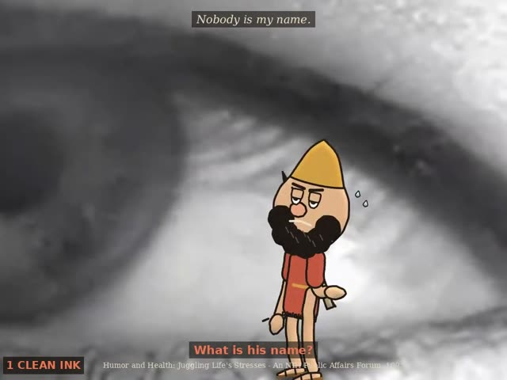
0:12 the start of this part, just after its card reel frame Frames from a review reel, used to check the shots in sequence.
reel frame Frames from a review reel, used to check the shots in sequence.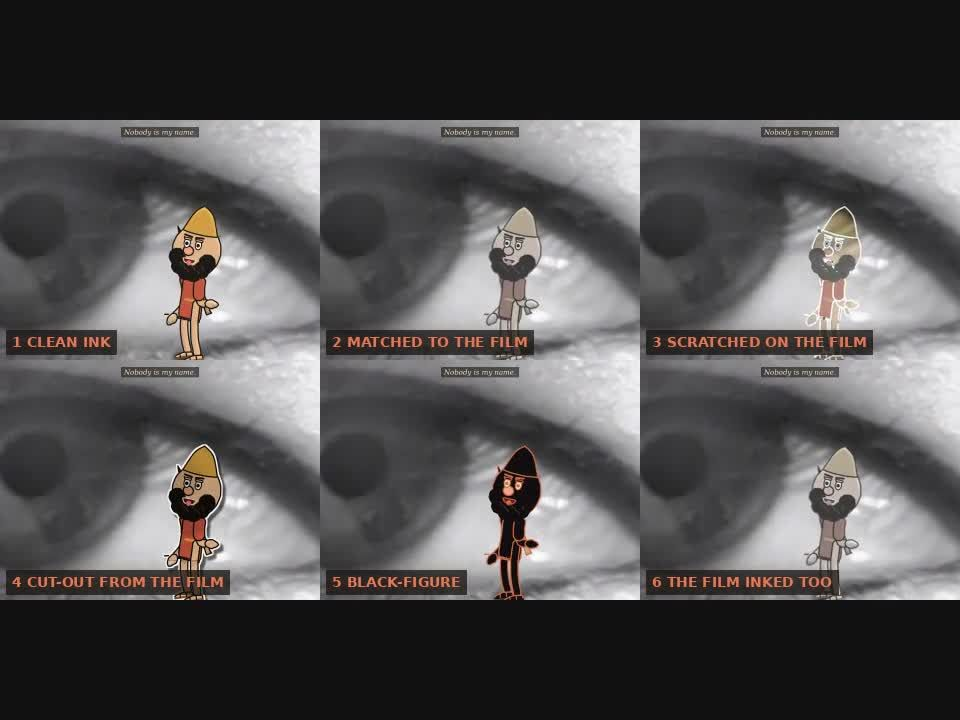
style test The same drawn figure set into the footage in one candidate way.- #
- 1
- Style
- Clean ink
- What it does
- Flat ink cartoon over the film, shaded toward the film's light, with a cast shadow.
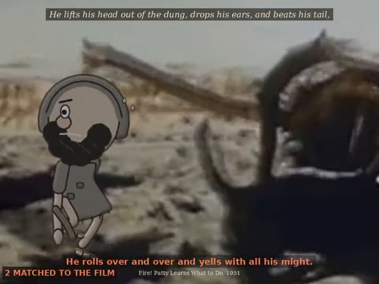
1:12 the start of this part, just after its card reel frame Frames from a review reel, used to check the shots in sequence.
reel frame Frames from a review reel, used to check the shots in sequence.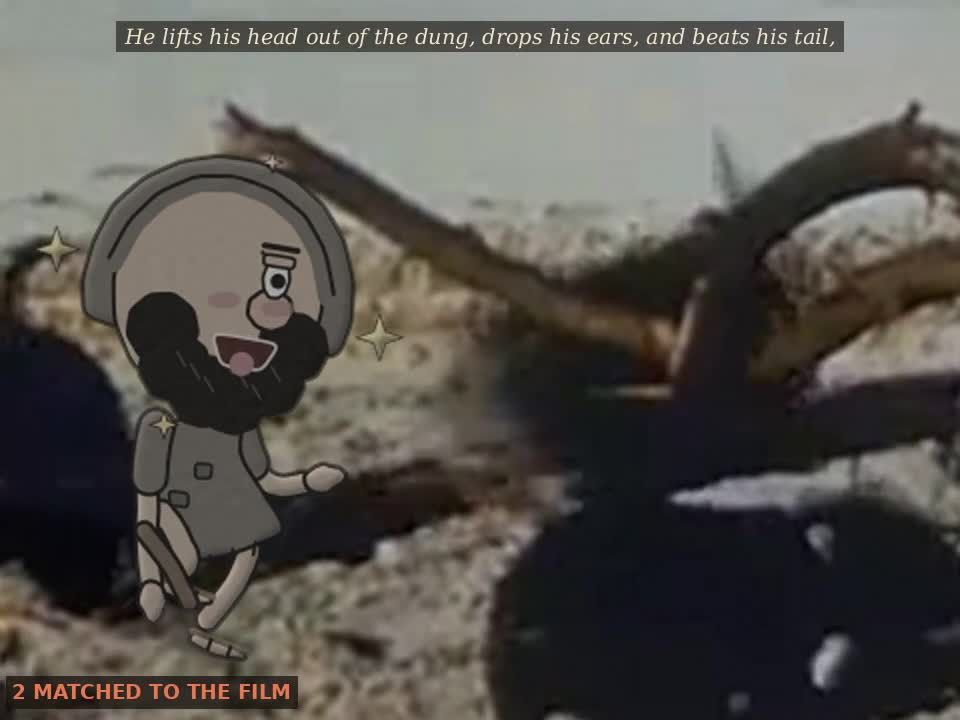
style test The same drawn figure set into the footage in one candidate way.- #
- 2
- Style
- Matched to the film
- What it does
- The drawing takes the film's saturation, tint and exposure (so it flickers with it), is softened to the film's sharpness, carries the film's grain and dirt, and picks up film light at its edges (light wrap).
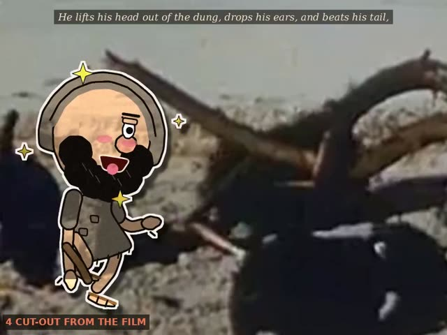
1:25 the start of this part, just after its card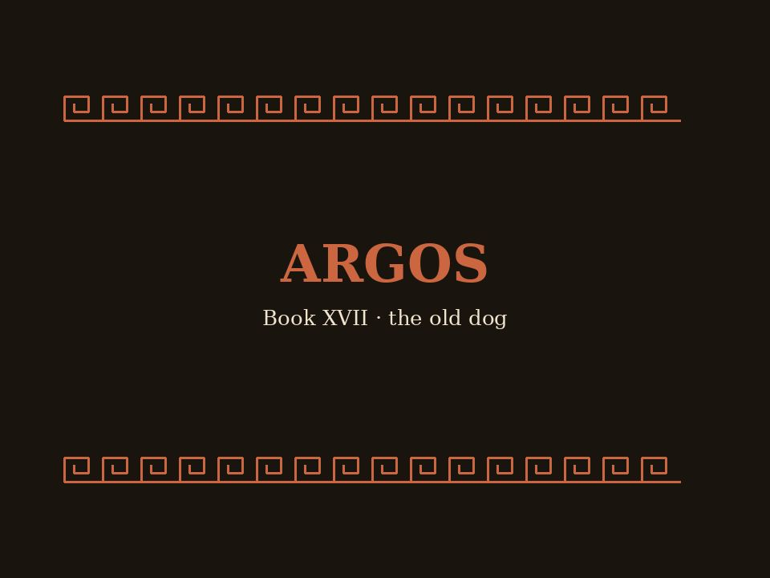
reel frame Frames from a review reel, used to check the shots in sequence.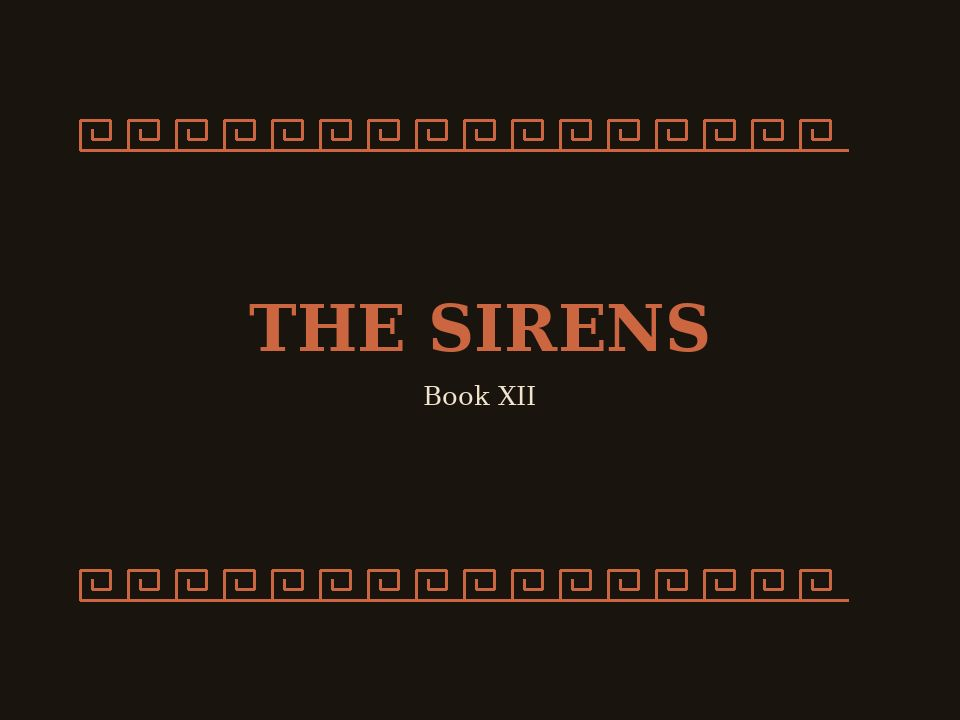
reel frame Frames from a review reel, used to check the shots in sequence.- #
- 3
- Style
- Scratched on the film
- What it does
- Lines are white, as if scratched into the emulsion, and move every frame. Fills are translucent dye that wobbles from frame to frame.


- #
- 4
- Style
- Cut-out from the film
- What it does
- Paper cut-outs with a white paper edge and a hard shadow, moving on threes. Each fill is coloured over a texture taken from the footage itself.
- #
- 5
- Style
- Black-figure
- What it does
- A black silhouette with lines cut in the clay colour; the film's grain shows through it.
- #
- 6
- Style
- The film inked too
- What it does
- The footage is painted down and its edges traced in moving ink, and the drawing is matched to it.

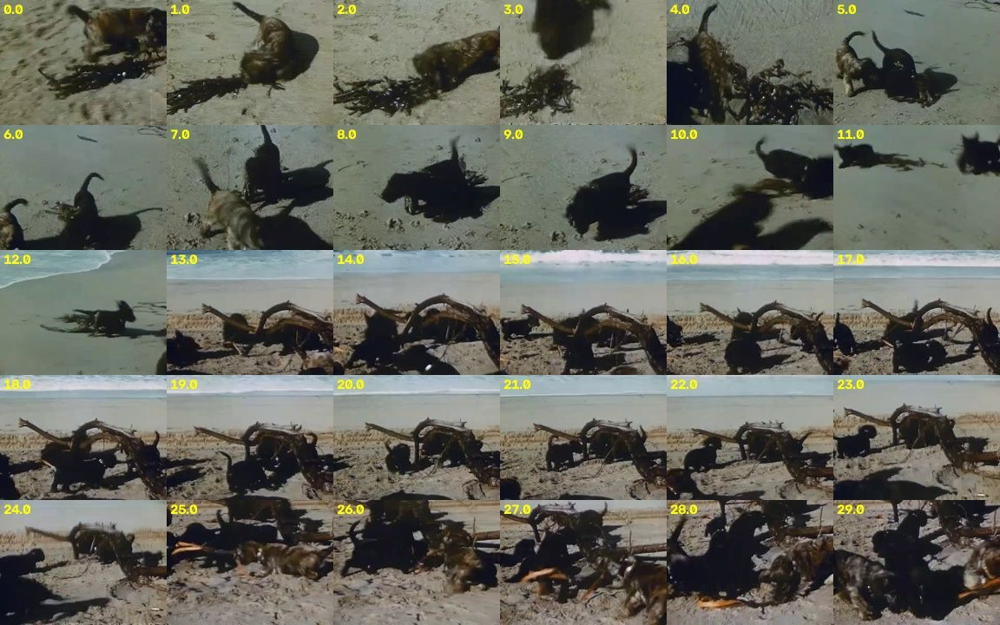
style test Plate study
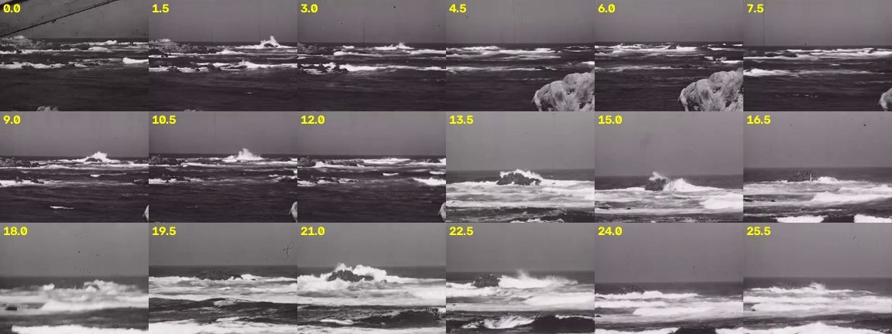
style test Plate study
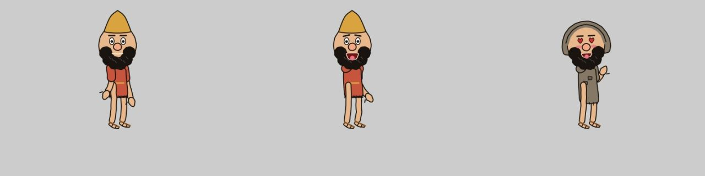
style test First drawn figure over a plate
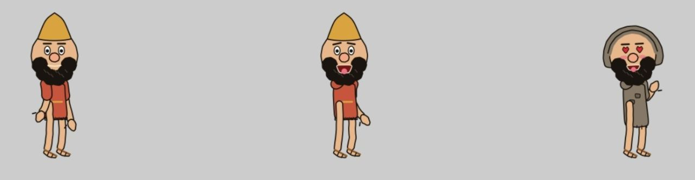
style test First drawn figure over a plate
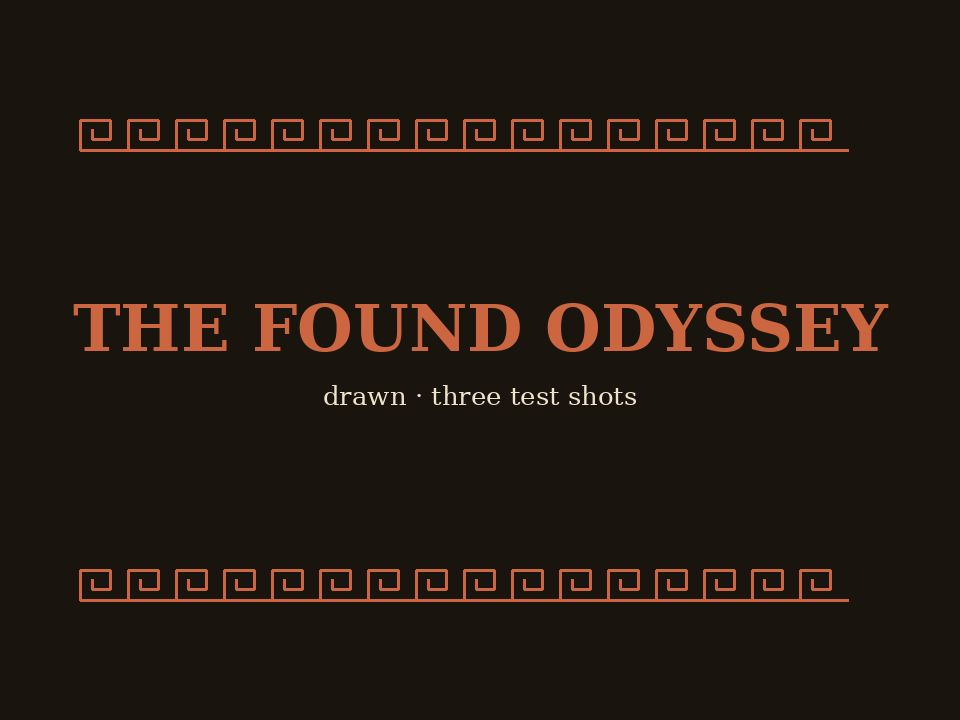
reel frame Contact sheet 1reel frame Reel check

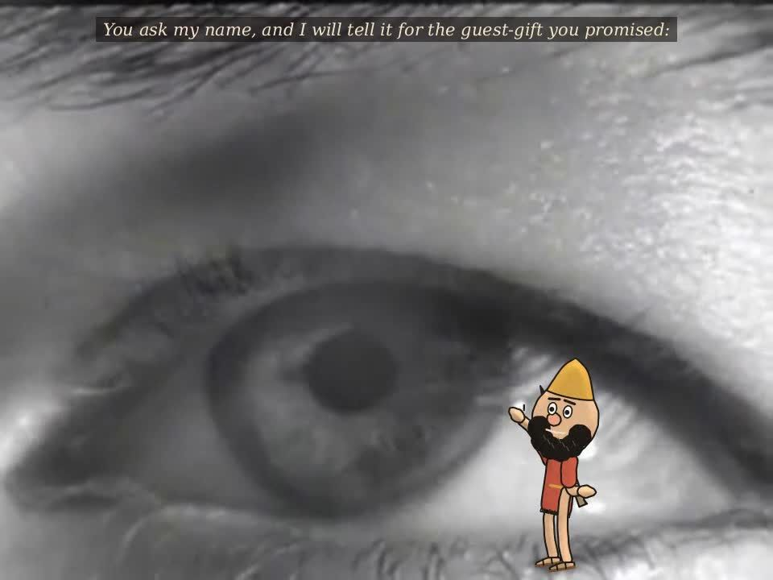
reel frame Reel check
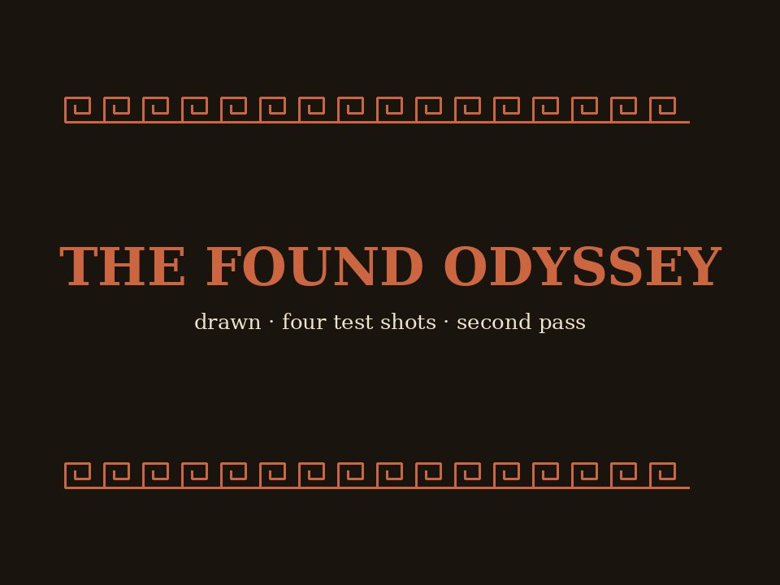
reel frame Contact sheet 1

found-odyssey-drawn-v2.mp4
This is four shots in story order, in a seventh style built from the lab:
This is four shots in story order, in a seventh style built from the lab:
- the drawing is shaded and lit like matched (2), with the film's grain and dirt and edge light;
- it keeps full cartoon colour.
New in every shot
Animation layer. It is computed from the hand-keyed motion and changes how the motion is drawn, not the keys:
- squash and stretch, and a squash after each landing;
- a slow breath when he stands still;
- a spring on the head, so the cap tip and beard follow through;
- speed lines behind fast hands;
- dust and impact marks where his feet land;
- sparkles on joy.
Camera. Push-ins are cropped from the footage, and the drawing is redrawn sharp at every zoom. They are timed to the jokes: tight on Odysseus for each line he speaks, wide again for each archive answer so the footage can respond.
The footage reacts:
- the eye's surface ripples where he lands;
- sand dust takes its colour from the beach;
- white water breaks at the bow when the boat dips;
- the storm footage speeds up and shakes on each gust.
Per shot
- NOBODY:
- he hops on his own name, and the eye's surface ripples where he lands;
- at the end he winks and twirls the stake.
- AEOLUS (new):
- Scene: OD-B10-S01, lines 7–10 and 12.
- Footage: Dust Storm, 1936.
- Action:
- Odysseus sleeps holding the bag.
- An arm with shears snips the silver wire, and the winds burst out as puffed-cheek clouds.
- He is blown out of frame, comes tumbling back in and lands on his backside.
- Aeolus speaks from a black-figure panel, and a small wind answers with the archive's lines:
- "So fly on over and we'll see you in the island" (Flying the Islands of the Bahamas, 2008);
- "Out I say, mother means business" (Mother Mack Trains Her Seven Puppies, 1952);
- "You hate me" (The Vicious Circle, or What Are We Trying to Do?, 1964).
- A last gust takes him, and a sandal comes down after him.
- Skipped: line 11's answer.
- THE SIRENS:
- his feet kick while he struggles;
- hearts float up from him toward the Sirens' panel.
- ARGOS:
- he jolts when the archive says "yells with all his might";
- a small wave goodbye at the end.
Observed and generated
This part separates what came from the archive from what was made here.
Unchanged from the first pass:
- Sound is the Found Odyssey CALL tracks, cut into lines and given pauses; the words and their order are unchanged.
- Footage comes from the cineosis-lab library (
lab/clips/), not the clips the Found Odyssey picked, which are on r2.dev and could not be reached.
Generated:
- all drawing, the animation layer, the camera moves, the ripples and dust, the splashes, and the footage shake;
- the sound beds, footsteps and the fire-truck wail.
Character designs: Odysseus, the crew, the wind heads, Aeolus and the Sirens are my own designs.
Review: none yet.